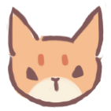

| Gato |
Nombre |
Descripcion |
|
Turkish Angora |
Un gato blanco de pelo largo de Turquía. |
|
Persian |
Un gato perezoso con un pelo extravagantemente largo. |
|
Turkish Van |
Un fan natural del lago Van en Turquía. |
|
Ragamuffin |
Parece un Ragdoll, pero una mirada más cercana mostrará que no lo es. |
|  |
Abyssinian |
Un gato que parece sacado de una pintura del antiguo Egipto. |
|
Bengal |
Un gato salvaje con apariencia de bestia. |
 |
Ragdoll |
Al igual que mi nombre, me encanta que me abracen y me abracen. |
|
Bombay |
Nariz negra, pelaje negro, labios negros... parece un leopardo negro. |